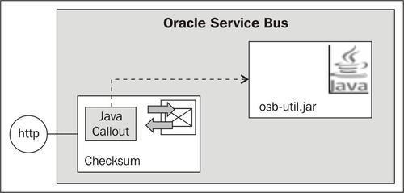
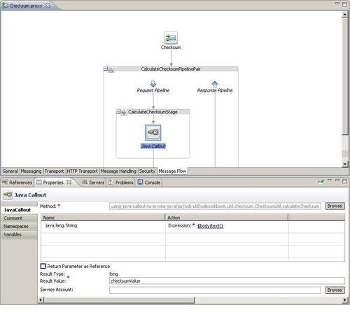
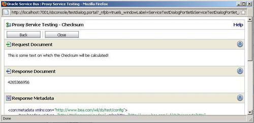

In this recipe, we will show how we can use a Java Callout action to invoke Java code, which might already exist. This is an easy way to extend the standard functionality of the service bus.
We will use the Java Callout action to call a Java method which returns the Checksum of the message passed as the parameter. The functionality of calculating a checksum is not available as an XPath/XQuery function and adding it through a Java Callout action is of course much simpler and more efficient than using a real web service.

You can import the OSB project containing the base setup for this recipe into Eclipse OEPE from \chapter-9\getting-ready\using-java-callout-to-invoke-java.
We will first create the Java project with the Java class holding the checksum calculation functionality. In Eclipse OEPE, perform the following steps:
java into the Wizards field, select Java Project and click Next. osb-checksum-util into the Project name field. osbcookbook.util.checksum into the Package field. ChecksumUtil into the Name field and click Finish.public static long calculateChecksum(String data) {
Checksum checksum = new CRC32();
checksum.update(data.getBytes(), 0, data.getBytes().length);
return checksum.getValue();
}
By doing that, the checksum functionality is ready to be used. In order to invoke it through a Java Callout, it needs to be packaged into a Java Archive (JAR) file and copied into the OSB project. In Eclipse OEPE, perform the following steps:
java into Select an export destination and select JAR file. jar folder inside the using-java-callout-to-invoke-java OSB project, enter osb-checksum-util.jar into the File name field and click Save.Now, let's switch to the OSB project and implement the proxy service calling our new Java calls through a Java Callout. In Eclipse OEPE, perform the following steps:
jar folder inside the using-java-callout-to-invoke-java project by pressing F5 and check that the JAR file created previously is located inside the jar folder. proxy folder and name it Checksum. CalculateChecksumStage. jar folder of the project and click OK. $body/text() into the Expression field and click OK. checksumValue into the Result Value field.
We have added the Java Callout action to invoke our Java method and after that the checksum value is available in the checksumValue variable. Let's add a Replace action to return the checksum in the body variable. In Eclipse OEPE, perform the following steps.
$checksumValue into the Expression field. body into the In Variable field.Now let's test the proxy service by performing the following steps in the Service Bus console:
proxy folder inside the using-java-callout-to-invoke-java project.
We have created a Java class, packaged it as a JAR and invoked it from the OSB proxy service through a Java Callout action. Only static methods can be invoked through the Java Callout action; other, non-static methods will not be shown when browsing the classes/methods.
The JAR is deployed with the OSB project to the OSB server and it will always run inside the OSB server.
It's recommended that the JARs are kept as simple as possible, any large bodies of code or other large frameworks that the JAR invokes should be placed in the [OSB-DOMAIN]/lib folder. Any change to a JAR will cause all service which references it to be redeployed. Therefore, dependencies between JARs and services should be kept on a minimum. To achieve that, only dependent and overlapping classes should be placed in the same JAR.
In our case, the ChecksumUtil Java class only uses another class from the Java library, which is directly available on the OSB. If we create dependencies to other Java frameworks, such as Apache Commons, then the corresponding JARs have to be copied manually to the domain\lib folder, that is, [WL_HOME]\user_projects\domains\osb_cookbook_domain\lib.
Spring is a powerful framework which can help to implement Java code which is more loosely coupled. In order to use the Spring framework inside a class used in a Java Callout, make sure that Spring 2.5.x is used. This version of Spring is already included with WebLogic server, so no additional JAR has to be placed in the domain\lib folder.
A solution of the recipe, which supports different implementations of the Checksum interface through a Spring context configuration, is available in the folder \chapter-9\solution\using-java-callout-to-invoke-java\spring.